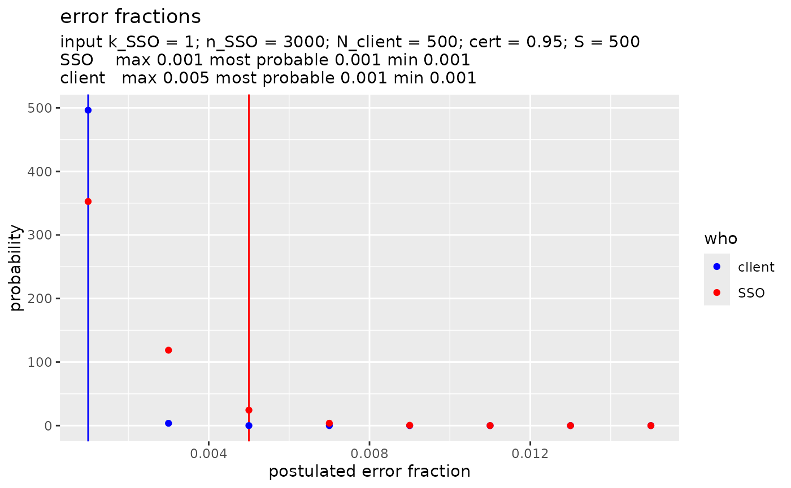

This function shows, when visual is TRUE, the results of a call to SSO_estimate() in a plot combining the probability curves of the error fraction in the SSO transactions, and of the error fraction in the client transactions. The text in the plot shows the rounded of values of the min, most probable, and max values for both the SSO and the client. When visual is FALSE, a list of the min, most probable, and max values for both the SSO and the client are returned. In that case the raw values of min, most probable, and max are returned, so no rounding is done.
SSO_graph_plot(SSO_out, cert = 0.95, visual = TRUE)The output of a call to SSO_estimate().
The one sided certainty level for the min and max values of the error fraction. Default 0.95.
If TRUE, a plot is returned. If FALSE, a list of specific values is returned. Default TRUE.
SSO_out <- SSO_estimate(k_SSO = 1, n_SSO = 3000, N_client = 500, S = 500)
SSO_graph_plot(SSO_out)
